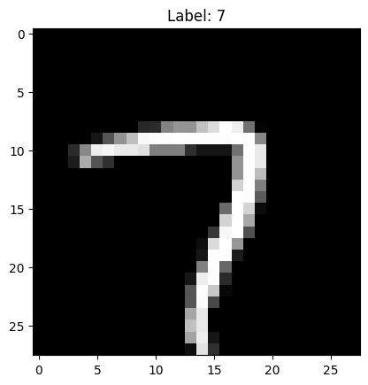

import torch
import torch.nn as nn
from torchinfo import summary
SEED = 10
torch.manual_seed(SEED)
torch.cuda.manual_seed(SEED)torch.cuda.is_available()/home/datacuber/miniconda3/lib/python3.12/site-packages/torch/cuda/__init__.py:128: UserWarning: CUDA initialization: CUDA unknown error - this may be due to an incorrectly set up environment, e.g. changing env variable CUDA_VISIBLE_DEVICES after program start. Setting the available devices to be zero. (Triggered internally at /opt/conda/conda-bld/pytorch_1720538439675/work/c10/cuda/CUDAFunctions.cpp:108.)
return torch._C._cuda_getDeviceCount() > 0Falsefrom sklearn.datasets import fetch_openml
df, target = fetch_openml("mnist_784", return_X_y=True)
print(f"Shape X: {df.shape}")
print(f"Shape y: {target.shape}")--------------------------------------------------------------------------- KeyboardInterrupt Traceback (most recent call last) Cell In[14], line 3 1 from sklearn.datasets import fetch_openml ----> 3 df, target = fetch_openml("mnist_784", return_X_y=True) 4 print(f"Shape X: {df.shape}") 5 print(f"Shape y: {target.shape}") File ~/miniconda3/lib/python3.12/site-packages/sklearn/utils/_param_validation.py:213, in validate_params.<locals>.decorator.<locals>.wrapper(*args, **kwargs) 207 try: 208 with config_context( 209 skip_parameter_validation=( 210 prefer_skip_nested_validation or global_skip_validation 211 ) 212 ): --> 213 return func(*args, **kwargs) 214 except InvalidParameterError as e: 215 # When the function is just a wrapper around an estimator, we allow 216 # the function to delegate validation to the estimator, but we replace 217 # the name of the estimator by the name of the function in the error 218 # message to avoid confusion. 219 msg = re.sub( 220 r"parameter of \w+ must be", 221 f"parameter of {func.__qualname__} must be", 222 str(e), 223 ) File ~/miniconda3/lib/python3.12/site-packages/sklearn/datasets/_openml.py:1127, in fetch_openml(name, version, data_id, data_home, target_column, cache, return_X_y, as_frame, n_retries, delay, parser, read_csv_kwargs) 1125 # obtain the data 1126 url = _DATA_FILE.format(data_description["file_id"]) -> 1127 bunch = _download_data_to_bunch( 1128 url, 1129 return_sparse, 1130 data_home, 1131 as_frame=bool(as_frame), 1132 openml_columns_info=features_list, 1133 shape=shape, 1134 target_columns=target_columns, 1135 data_columns=data_columns, 1136 md5_checksum=data_description["md5_checksum"], 1137 n_retries=n_retries, 1138 delay=delay, 1139 parser=parser_, 1140 read_csv_kwargs=read_csv_kwargs, 1141 ) 1143 if return_X_y: 1144 return bunch.data, bunch.target File ~/miniconda3/lib/python3.12/site-packages/sklearn/datasets/_openml.py:681, in _download_data_to_bunch(url, sparse, data_home, as_frame, openml_columns_info, data_columns, target_columns, shape, md5_checksum, n_retries, delay, parser, read_csv_kwargs) 677 from pandas.errors import ParserError 679 no_retry_exception = ParserError --> 681 X, y, frame, categories = _retry_with_clean_cache( 682 url, data_home, no_retry_exception 683 )(_load_arff_response)( 684 url, 685 data_home, 686 parser=parser, 687 output_type=output_type, 688 openml_columns_info=features_dict, 689 feature_names_to_select=data_columns, 690 target_names_to_select=target_columns, 691 shape=shape, 692 md5_checksum=md5_checksum, 693 n_retries=n_retries, 694 delay=delay, 695 read_csv_kwargs=read_csv_kwargs, 696 ) 698 return Bunch( 699 data=X, 700 target=y, (...) 704 target_names=target_columns, 705 ) File ~/miniconda3/lib/python3.12/site-packages/sklearn/datasets/_openml.py:64, in _retry_with_clean_cache.<locals>.decorator.<locals>.wrapper(*args, **kw) 62 return f(*args, **kw) 63 try: ---> 64 return f(*args, **kw) 65 except URLError: 66 raise File ~/miniconda3/lib/python3.12/site-packages/sklearn/datasets/_openml.py:546, in _load_arff_response(url, data_home, parser, output_type, openml_columns_info, feature_names_to_select, target_names_to_select, shape, md5_checksum, n_retries, delay, read_csv_kwargs) 536 arff_params: Dict = dict( 537 parser=parser, 538 output_type=output_type, (...) 543 read_csv_kwargs=read_csv_kwargs or {}, 544 ) 545 try: --> 546 X, y, frame, categories = _open_url_and_load_gzip_file( 547 url, data_home, n_retries, delay, arff_params 548 ) 549 except Exception as exc: 550 if parser != "pandas": File ~/miniconda3/lib/python3.12/site-packages/sklearn/datasets/_openml.py:534, in _load_arff_response.<locals>._open_url_and_load_gzip_file(url, data_home, n_retries, delay, arff_params) 532 gzip_file = _open_openml_url(url, data_home, n_retries=n_retries, delay=delay) 533 with closing(gzip_file): --> 534 return load_arff_from_gzip_file(gzip_file, **arff_params) File ~/miniconda3/lib/python3.12/site-packages/sklearn/datasets/_arff_parser.py:529, in load_arff_from_gzip_file(gzip_file, parser, output_type, openml_columns_info, feature_names_to_select, target_names_to_select, shape, read_csv_kwargs) 520 return _liac_arff_parser( 521 gzip_file, 522 output_type, (...) 526 shape, 527 ) 528 elif parser == "pandas": --> 529 return _pandas_arff_parser( 530 gzip_file, 531 output_type, 532 openml_columns_info, 533 feature_names_to_select, 534 target_names_to_select, 535 read_csv_kwargs, 536 ) 537 else: 538 raise ValueError( 539 f"Unknown parser: '{parser}'. Should be 'liac-arff' or 'pandas'." 540 ) File ~/miniconda3/lib/python3.12/site-packages/sklearn/datasets/_arff_parser.py:400, in _pandas_arff_parser(gzip_file, output_arrays_type, openml_columns_info, feature_names_to_select, target_names_to_select, read_csv_kwargs) 388 default_read_csv_kwargs = { 389 "header": None, 390 "index_col": False, # always force pandas to not use the first column as index (...) 397 "dtype": dtypes_positional, 398 } 399 read_csv_kwargs = {**default_read_csv_kwargs, **(read_csv_kwargs or {})} --> 400 frame = pd.read_csv(gzip_file, **read_csv_kwargs) 401 try: 402 # Setting the columns while reading the file will select the N first columns 403 # and not raise a ParserError. Instead, we set the columns after reading the 404 # file and raise a ParserError if the number of columns does not match the 405 # number of columns in the metadata given by OpenML. 406 frame.columns = [name for name in openml_columns_info] File ~/miniconda3/lib/python3.12/site-packages/pandas/io/parsers/readers.py:1026, in read_csv(filepath_or_buffer, sep, delimiter, header, names, index_col, usecols, dtype, engine, converters, true_values, false_values, skipinitialspace, skiprows, skipfooter, nrows, na_values, keep_default_na, na_filter, verbose, skip_blank_lines, parse_dates, infer_datetime_format, keep_date_col, date_parser, date_format, dayfirst, cache_dates, iterator, chunksize, compression, thousands, decimal, lineterminator, quotechar, quoting, doublequote, escapechar, comment, encoding, encoding_errors, dialect, on_bad_lines, delim_whitespace, low_memory, memory_map, float_precision, storage_options, dtype_backend) 1013 kwds_defaults = _refine_defaults_read( 1014 dialect, 1015 delimiter, (...) 1022 dtype_backend=dtype_backend, 1023 ) 1024 kwds.update(kwds_defaults) -> 1026 return _read(filepath_or_buffer, kwds) File ~/miniconda3/lib/python3.12/site-packages/pandas/io/parsers/readers.py:626, in _read(filepath_or_buffer, kwds) 623 return parser 625 with parser: --> 626 return parser.read(nrows) File ~/miniconda3/lib/python3.12/site-packages/pandas/io/parsers/readers.py:1923, in TextFileReader.read(self, nrows) 1916 nrows = validate_integer("nrows", nrows) 1917 try: 1918 # error: "ParserBase" has no attribute "read" 1919 ( 1920 index, 1921 columns, 1922 col_dict, -> 1923 ) = self._engine.read( # type: ignore[attr-defined] 1924 nrows 1925 ) 1926 except Exception: 1927 self.close() File ~/miniconda3/lib/python3.12/site-packages/pandas/io/parsers/c_parser_wrapper.py:234, in CParserWrapper.read(self, nrows) 232 try: 233 if self.low_memory: --> 234 chunks = self._reader.read_low_memory(nrows) 235 # destructive to chunks 236 data = _concatenate_chunks(chunks) File parsers.pyx:838, in pandas._libs.parsers.TextReader.read_low_memory() File parsers.pyx:921, in pandas._libs.parsers.TextReader._read_rows() File parsers.pyx:1066, in pandas._libs.parsers.TextReader._convert_column_data() File parsers.pyx:1105, in pandas._libs.parsers.TextReader._convert_tokens() File parsers.pyx:1190, in pandas._libs.parsers.TextReader._convert_with_dtype() File ~/miniconda3/lib/python3.12/site-packages/pandas/core/dtypes/dtypes.py:518, in CategoricalDtype.construct_array_type(cls) 515 combined_hashed = combine_hash_arrays(iter(cat_array), num_items=len(cat_array)) 516 return np.bitwise_xor.reduce(combined_hashed) --> 518 @classmethod 519 def construct_array_type(cls) -> type_t[Categorical]: 520 """ 521 Return the array type associated with this dtype. 522 (...) 525 type 526 """ 527 from pandas import Categorical KeyboardInterrupt:
from sklearn.model_selection import train_test_split
import matplotlib.pyplot as plt
X_train, X_test, y_train, y_test = train_test_split(
df, target, test_size=0.25, random_state=SEED
)from torch.utils.data import DataLoader, Dataset
class MNIST(Dataset):
def __init__(self, X, y):
self.X = X.to_numpy()
self.y = y.values
def __len__(self):
return len(self.X)
def __getitem__(self, idx):
return dict(
X=torch.tensor(self.X[idx], dtype=torch.float32)
.view(28, 28)
.unsqueeze(0),
y=torch.tensor(int(self.y[idx]), dtype=torch.long),
)
train_set = MNIST(X_train, y_train)
test_set = MNIST(X_test, y_test)def plot_number(X, y, tensor=True):
if tensor:
X = X.numpy().squeeze(0)
y = y.item()
plt.imshow(X, cmap="gray")
plt.title(f"Label: {y:.0f}")
plt.show()
idx = torch.randint(0, len(train_set), (1,)).item()
plot_number(train_set[idx]["X"], train_set[idx]["y"])
train_set[0]["X"].shape, train_set[0]["y"].shape(torch.Size([1, 28, 28]), torch.Size([]))class CNN(nn.Module):
def __init__(self, in_channels=1, n_outputs=10, ks=3):
super().__init__()
self.conv1 = self.CNN_block(in_channels, 64, k=ks)
self.conv2 = self.CNN_block(64, 32, k=ks)
self.flatten = nn.Flatten()
# self.fc1 = nn.LazyLinear(32)
self.fc1 = nn.Linear(32 * 5 * 5, 16) # filtros x tamaño
self.fc2 = nn.Linear(16, n_outputs)
def forward(self, x):
x = self.conv1(x)
x = self.conv2(x)
x = self.flatten(x)
x = self.fc1(x)
x = self.fc2(x)
return x
@staticmethod
def CNN_block(c_in, c_out, k=3, p=0, s=1, pk=2, ps=2):
return nn.Sequential(
nn.Conv2d(
in_channels=c_in,
out_channels=c_out,
kernel_size=k,
padding=p,
stride=s,
),
nn.ReLU(),
nn.MaxPool2d(kernel_size=pk, stride=ps),
)
model = CNN(in_channels=1, n_outputs=10)
summary(model, input_size=(1, 1, 28, 28))/home/datacuber/miniconda3/lib/python3.12/site-packages/torch/cuda/__init__.py:128: UserWarning: CUDA initialization: CUDA unknown error - this may be due to an incorrectly set up environment, e.g. changing env variable CUDA_VISIBLE_DEVICES after program start. Setting the available devices to be zero. (Triggered internally at /opt/conda/conda-bld/pytorch_1720538439675/work/c10/cuda/CUDAFunctions.cpp:108.)
return torch._C._cuda_getDeviceCount() > 0==========================================================================================
Layer (type:depth-idx) Output Shape Param #
==========================================================================================
CNN [1, 10] --
├─Sequential: 1-1 [1, 64, 13, 13] --
│ └─Conv2d: 2-1 [1, 64, 26, 26] 640
│ └─ReLU: 2-2 [1, 64, 26, 26] --
│ └─MaxPool2d: 2-3 [1, 64, 13, 13] --
├─Sequential: 1-2 [1, 32, 5, 5] --
│ └─Conv2d: 2-4 [1, 32, 11, 11] 18,464
│ └─ReLU: 2-5 [1, 32, 11, 11] --
│ └─MaxPool2d: 2-6 [1, 32, 5, 5] --
├─Flatten: 1-3 [1, 800] --
├─Linear: 1-4 [1, 16] 12,816
├─Linear: 1-5 [1, 10] 170
==========================================================================================
Total params: 32,090
Trainable params: 32,090
Non-trainable params: 0
Total mult-adds (Units.MEGABYTES): 2.68
==========================================================================================
Input size (MB): 0.00
Forward/backward pass size (MB): 0.38
Params size (MB): 0.13
Estimated Total Size (MB): 0.51
==========================================================================================import torchmetrics
import numpy as np
import time
device = torch.device("cuda" if torch.cuda.is_available() else "cpu")
print(f"Training in {device}")
model = CNN(in_channels=1, n_outputs=10).to(device)
criterion = nn.CrossEntropyLoss()
optimizer = torch.optim.Adam(model.parameters(), lr=3e-4)
EPOCHS = 10
train_dataloader = DataLoader(
train_set,
batch_size=1024,
shuffle=True,
pin_memory=True,
num_workers=10,
drop_last=True,
)
test_dataloader = DataLoader(
test_set, batch_size=32, shuffle=False, pin_memory=True, num_workers=10
)
train_metric = torchmetrics.Recall(task="multiclass", num_classes=10).to(
device
)
test_metric = torchmetrics.Recall(task="multiclass", num_classes=10).to(
device
)
train_losses = []
test_losses = []
for e in range(EPOCHS):
start_time = time.time()
train_batch_losses = []
test_batch_losses = []
for batch in train_dataloader:
X, y = batch["X"].to(device), batch["y"].to(device)
optimizer.zero_grad()
y_pred = model(X)
loss = criterion(y_pred, y)
loss.backward()
optimizer.step()
tm = train_metric(y_pred, y)
train_batch_losses.append(loss.item())
tm = train_metric.compute()
train_epoch_loss = np.mean(train_batch_losses)
with torch.no_grad():
for batch in test_dataloader:
X, y = batch["X"].to(device), batch["y"].to(device)
y_pred = model(X)
loss = criterion(y_pred, y)
tst_m = test_metric(y_pred, y)
test_batch_losses.append(loss.item())
tst_m = test_metric.compute()
test_epoch_loss = np.mean(test_batch_losses)
end_time = time.time()
epoch_time = end_time - start_time
## Logging
print(
f"Epoch: {e}- time: {epoch_time} - Train Loss: {train_epoch_loss:.4f} - Test Loss: {test_epoch_loss:.4f}- Train Recall: {tm:.4f} - Test Recall: {tst_m:.4f}"
)Epoch: 0- time: 17.21859073638916 - Train Loss: 2.2997 - Test Loss: 0.5438- Train Recall: 0.5870 - Test Recall: 0.8499--------------------------------------------------------------------------- KeyboardInterrupt Traceback (most recent call last) Cell In[8], line 41 38 X, y = batch["X"].to(device), batch["y"].to(device) 40 optimizer.zero_grad() ---> 41 y_pred = model(X) 42 loss = criterion(y_pred, y) 43 loss.backward() File ~/miniconda3/lib/python3.12/site-packages/torch/nn/modules/module.py:1553, in Module._wrapped_call_impl(self, *args, **kwargs) 1551 return self._compiled_call_impl(*args, **kwargs) # type: ignore[misc] 1552 else: -> 1553 return self._call_impl(*args, **kwargs) File ~/miniconda3/lib/python3.12/site-packages/torch/nn/modules/module.py:1562, in Module._call_impl(self, *args, **kwargs) 1557 # If we don't have any hooks, we want to skip the rest of the logic in 1558 # this function, and just call forward. 1559 if not (self._backward_hooks or self._backward_pre_hooks or self._forward_hooks or self._forward_pre_hooks 1560 or _global_backward_pre_hooks or _global_backward_hooks 1561 or _global_forward_hooks or _global_forward_pre_hooks): -> 1562 return forward_call(*args, **kwargs) 1564 try: 1565 result = None Cell In[7], line 13, in CNN.forward(self, x) 11 def forward(self, x): 12 x = self.conv1(x) ---> 13 x = self.conv2(x) 14 x = self.flatten(x) 15 x = self.fc1(x) File ~/miniconda3/lib/python3.12/site-packages/torch/nn/modules/module.py:1553, in Module._wrapped_call_impl(self, *args, **kwargs) 1551 return self._compiled_call_impl(*args, **kwargs) # type: ignore[misc] 1552 else: -> 1553 return self._call_impl(*args, **kwargs) File ~/miniconda3/lib/python3.12/site-packages/torch/nn/modules/module.py:1562, in Module._call_impl(self, *args, **kwargs) 1557 # If we don't have any hooks, we want to skip the rest of the logic in 1558 # this function, and just call forward. 1559 if not (self._backward_hooks or self._backward_pre_hooks or self._forward_hooks or self._forward_pre_hooks 1560 or _global_backward_pre_hooks or _global_backward_hooks 1561 or _global_forward_hooks or _global_forward_pre_hooks): -> 1562 return forward_call(*args, **kwargs) 1564 try: 1565 result = None File ~/miniconda3/lib/python3.12/site-packages/torch/nn/modules/container.py:219, in Sequential.forward(self, input) 217 def forward(self, input): 218 for module in self: --> 219 input = module(input) 220 return input File ~/miniconda3/lib/python3.12/site-packages/torch/nn/modules/module.py:1553, in Module._wrapped_call_impl(self, *args, **kwargs) 1551 return self._compiled_call_impl(*args, **kwargs) # type: ignore[misc] 1552 else: -> 1553 return self._call_impl(*args, **kwargs) File ~/miniconda3/lib/python3.12/site-packages/torch/nn/modules/module.py:1562, in Module._call_impl(self, *args, **kwargs) 1557 # If we don't have any hooks, we want to skip the rest of the logic in 1558 # this function, and just call forward. 1559 if not (self._backward_hooks or self._backward_pre_hooks or self._forward_hooks or self._forward_pre_hooks 1560 or _global_backward_pre_hooks or _global_backward_hooks 1561 or _global_forward_hooks or _global_forward_pre_hooks): -> 1562 return forward_call(*args, **kwargs) 1564 try: 1565 result = None File ~/miniconda3/lib/python3.12/site-packages/torch/nn/modules/pooling.py:164, in MaxPool2d.forward(self, input) 163 def forward(self, input: Tensor): --> 164 return F.max_pool2d(input, self.kernel_size, self.stride, 165 self.padding, self.dilation, ceil_mode=self.ceil_mode, 166 return_indices=self.return_indices) File ~/miniconda3/lib/python3.12/site-packages/torch/_jit_internal.py:503, in boolean_dispatch.<locals>.fn(*args, **kwargs) 501 return if_true(*args, **kwargs) 502 else: --> 503 return if_false(*args, **kwargs) File ~/miniconda3/lib/python3.12/site-packages/torch/nn/functional.py:796, in _max_pool2d(input, kernel_size, stride, padding, dilation, ceil_mode, return_indices) 794 if stride is None: 795 stride = torch.jit.annotate(List[int], []) --> 796 return torch.max_pool2d(input, kernel_size, stride, padding, dilation, ceil_mode) KeyboardInterrupt:
def plot_training_curves(train_loss, validation_loss, n_epochs, title=""):
plt.plot(
range(1, n_epochs + 1),
train_loss,
label="Train Loss",
)
plt.plot(
range(1, n_epochs + 1),
validation_loss,
label="Validation Loss",
)
plt.title(title)
plt.legend()
plt.show()
plot_training_curves(train_losses, test_losses, EPOCHS)